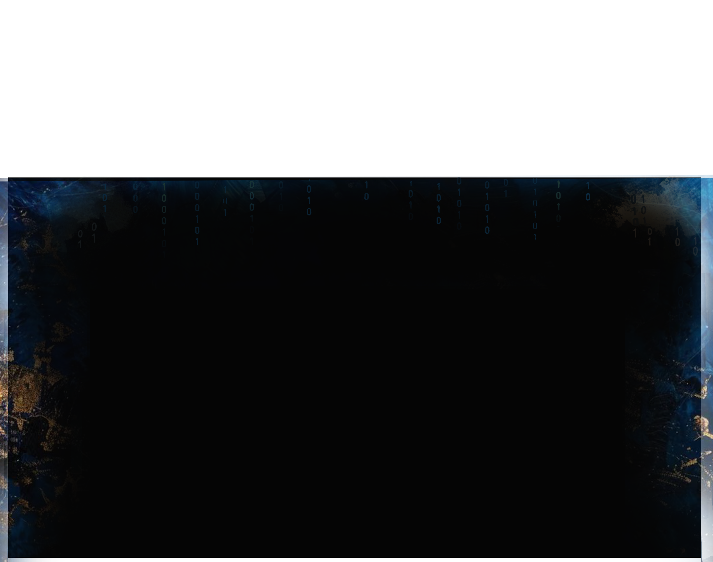

Decoding the Texture of Civilization
THE DECODERS
ORDER
LOGIC
TIME
FLOW
PHLOSOPHY
我们致力于将古代的纹路和痕迹与现代的计算机技术结合，使纹理可以以一种数字化的形式被创造和储存，这是一种新的文化传承方式，在实现文明数据可视化的同时，实现古代纹理的现代化应用。
在快节奏时代，引导人们静心观察，于细微处发现美，培养深度审美习惯。
通过数字化技术重现和创造纹理，通过个性化的纹理创造方式建立古代与现代的情感连接。
运用计算机技术实现古代纹理的现代化应用，实现创造性转化与创新型发展。

THE ARCHIVE